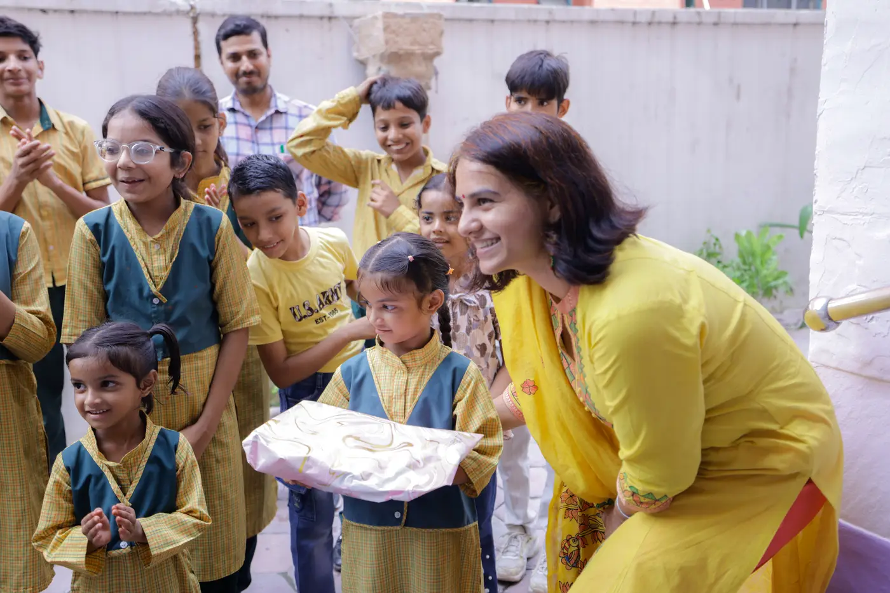

Healthy Hygiene & Wellbeing
Hygiene Education for Children: Handwashing, Periods and Why Schools Need Both

Hygiene education for children is not a single lesson about clean hands. It is a habit that grows over years, and it protects health, school attendance and dignity at the same time. The two topics that matter most, and that adults find hardest to talk about, are handwashing and menstrual health.
Aagahi Foundation runs hygiene sessions with school children and menstrual health conversations with women and girls in the community. This post shares practical advice for teaching both well, and it is honest about where good teaching still needs help from schools and governments.

Why handwashing is the best place to begin
Handwashing with soap is cheap, and the evidence for it is strong. According to the US Centers for Disease Control and Prevention, washing hands with soap can cut diarrhoea among young children by roughly 30 per cent. The Global Handwashing Partnership repeats that figure. For a family where one sick day means a lost wage and a missed class, that is a big gain.
So start there. Every year on 15 October, Global Handwashing Day reminds schools around the world to do the same.
How to run a ten-minute handwashing lesson
Children learn by doing, not by listening. Keep the lesson short, and let every child practise.
- Wet your hands with clean water.
- Soap up and cover every part: palms, backs, between the fingers and under the nails.
- Scrub for at least 20 seconds. Count slowly, or sing a short song.
- Rinse well, then dry with a clean cloth or let your hands air dry.
Then teach the moments that matter most: after using the toilet, before eating, before cooking or serving food, and after playing outside or touching animals. The CDC's clean hands pages give a clear checklist you can print.
Menstrual health: start before the first period
Silence causes more harm than the period itself. Imagine a girl who has never heard about periods: she can feel frightened, and she may stay home from school. So a calm talk beforehand prevents most of that fear.
What should a good menstrual health session cover? These points matter most:
- What a period is, in simple and truthful words, and that it is normal and healthy.
- How to use a pad or clean cloth, and how often to change it through the day.
- How to dispose of pads safely and privately, not in the toilet.
- That myths about being "impure" are wrong. A girl can study, cook, play and pray as usual.
Boys and men belong in the conversation as well. When fathers, brothers and teachers understand periods, girls get more support and fewer jokes.
Myths that still hurt girls
Old beliefs travel quickly, and they shape how girls feel about their own bodies. Replace each one with a plain fact.
| Myth | Fact |
|---|---|
| A girl is "impure" during her period. | A period is a normal body process. It has nothing to do with purity. |
| She must not cook, enter the kitchen or touch food. | She can do all of these. Washing hands is enough. |
| She should skip school and sports. | She can attend and play. Rest is fine if she feels unwell, but she does not need to hide. |
| Talking about periods is shameful. | Silence is the real problem, because it keeps girls from asking for help. |
Beyond hands: the other habits children need
Handwashing and menstrual health sit inside a bigger picture. Children also need a few other daily habits, and they are easy to teach together.
- Safe drinking water. Use filtered or boiled water, and keep drinking containers covered.
- Clean nails and hair. Trim nails every week. Short nails hold far less dirt.
- Toilet use. Teach every child to use the toilet, to flush, and then to wash with soap.
- Brushing teeth. Brush twice a day, and visit a health worker if a tooth hurts.
- Clean food. Wash fruit and vegetables, and cover cooked food.
Where to find help in India
The Government of India runs a Menstrual Hygiene Scheme through the Ministry of Health and Family Welfare. It began in 2011 as a pilot and now sits under the National Health Mission and the adolescent health programme. ASHA workers distribute subsidised pads to adolescent girls, and some schools and anganwadi centres supply them too. You can read about the programme on the National Health Mission site and the Ministry of Health and Family Welfare site. Details and prices differ between states, so ask your local ASHA worker or health centre what is available near you.
The honest limit: lessons are not enough
Teaching only works when children can act on it. A child cannot wash with soap if the school has no running water. A girl cannot change a pad if the toilet has no door, no water and no bin.
If your school lacks these basics, raise it politely and in writing with the headmaster and the school management committee. Parents have more power here than they think. Meanwhile, we keep running sessions, because knowledge still helps even where facilities lag. However, we do not pretend that a talk replaces a working tap.
What parents and teachers can do this week
- Put a bar of soap and a mug next to the household tap or the school water point.
- Wash hands together before the midday meal, so children see adults doing it too.
- Tell girls about periods before they start, and tell boys as well.
- Ask your local ASHA worker or health centre about pads and other adolescent health services.
Children in Class 1 to 12 can also learn basic science, including health topics, for free on our Study page. You can see more of our school sessions in the Our work gallery.
Good hygiene education is patient work. One lesson will not change a habit, but a steady routine will. Repeat the same short steps every week, praise children who remember them, and let older students teach the younger ones. Children copy what they see, so the adults around them set the standard every day.
Frequently asked questions about hygiene education for children
Why do children need soap, not just water?
Water alone removes some dirt, but soap breaks up the oils and germs that stick to skin. That is why health agencies recommend washing with soap. Rubbing your hands together for at least 20 seconds does most of the work.
How long should children wash their hands?
Scrub for at least 20 seconds, covering the palms, the backs of the hands, between the fingers and under the nails. A short song or a slow count to twenty helps younger children keep going.
When should we talk to a girl about periods?
Before they start. Many girls get their first period between about 10 and 15, so a calm conversation around age 9 or 10 is wise. Boys should hear about it too, so periods become normal rather than a secret.
Is it safe to use cloth during periods?
A clean pad is the safer choice where you can get one. If cloth is the only option, wash it with soap and water, dry it fully, preferably in sunlight, and store it in a clean place. Change it regularly through the day.
Where can adolescent girls get sanitary pads in India?
Under the Menstrual Hygiene Scheme, ASHA workers distribute subsidised pads, and some schools and anganwadi centres also supply them. Availability differs by state, so ask the local ASHA worker or health centre.